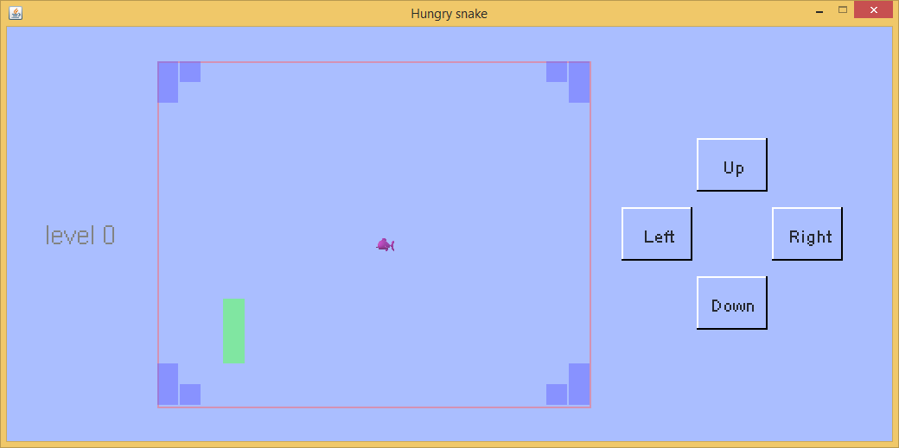
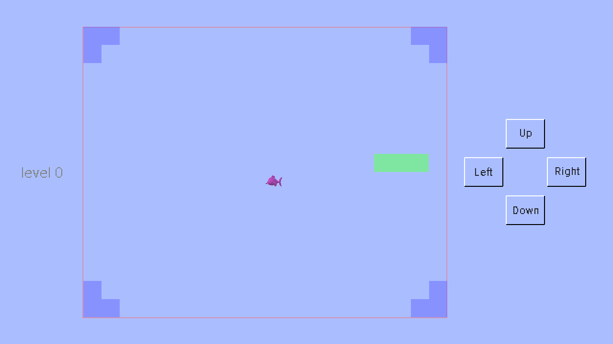

Hungry snake game first appeared in Nokia monochrome display mobile devices. It is a moving snake which eats food and grows longer. When it hits wall or itself, the game finishes. This game doesn't involve sophisticated logic or fancy images and is easy to implement.
In this example, body of the snake is made up of green blocks. The food is a pink colored fish. The walls are made up blue blocks. When the snake eats the fish, there will be a sound and player gains some points. If player gains enough points the game will go to next level. When the snake hits a wall or itself, a different sound will be played and the game finishes.
The sample code and its auxiliary files have been zipped in package. Click here to download zipped package of game examples. Unzip it and copy the game_examples folder into the scripts folder next to the JMFPLang.jar file, as shown in the following chart.

The source script, i.e. hungry_snake.mfps is in hungry_snake subfolder of game_examples folder. Its auxiliary files, i.e. food.png, eatfood.wav and hitwall.wav are also located in the same folder. To launch the example, simply start JMFPLang.jar file and in the command line run gdi_test::game_test::hungry_snake::run(). Since the first statement of hungry_snake.mfps, as shown below, tells MFP interpreter's entry function of this game, player can also navigate to the folder where JMFPLang.jar is located and then run the script in Windows Command/Powershell or Linux bash by typing java -jar JMFPLang.jar -f scripts\game_examples\hungry_snake\hungry_snake.mfps. User can even make the script self-executable by setting default open application for mfps files. For details of use of the @execution_entry annotation, simply type help @execution_entry in an MFP command line.
@execution_entry gdi_test::game_test::hungry_snake::run
Note that because MFP doesn't support static or global variables, in the game functions are used to return some constant setting values, i.e. window size, color, update interval etc. Below code is just an example.
// width of button
// 按钮的宽度
function BUTTONWIDTH()
return 80
endf
The moving area of snake is a big grid. Each unit of the grid is a block. The food always occupies one block. The wall and the body of the snake are made up of blocks. Each step the snake moves forward by one unit, until it hits something or it is steered by player to change direction.
Player controls the movement of the snake using mouse, finger or by pressing buttons. Because the game needs to react to the state change of the buttons, POINTER_DOWN event handler is added in the if branch, as shown in the the code snippet below.
variable giEvent = pull_event(DISPLAYSURF)
if giEvent == Null
// no event to handle // 没有输入事件
break
elseif get_event_type_name(giEvent) == "GDI_CLOSE"
// quit // 游戏退出事件
return -1
elseif get_event_type(giEvent) == 106 // mouse or finger slided // 鼠标或手指滑动事件
// x1 and y1 are the coordinate when sliding starts, x2 and y2 are the coordinate when sliding finishes
// x1和y1是滑动开始时的坐标位置，x2和y2是滑动结束时的坐标位置
variable x1 = get_event_info(giEvent, "last_x")
variable y1 = get_event_info(giEvent, "last_y")
variable x2 = get_event_info(giEvent, "x")
variable y2 = get_event_info(giEvent, "y")
... ...
elseif get_event_type_name(giEvent) == "POINTER_DOWN" // mouse or finger tapped down // 鼠标或手指按下事件
... ...
xHit = get_event_info(giEvent, "x")
yHit = get_event_info(giEvent, "y")
... ...
endif
In this game, some painting elements, e.g. snake and food, are always moving while other painting elements, e.g. walls and text on the buttons, are static. Clearly, drawing the static elements one after another in each screen update is slow and a waste of computation time. Since these static elements never overlap moving elements, a smarter way is to create a background image by calling open_image_display function. This function returns a handle like open_screen_display function. Then draw all the static elements in the background image using the same function as drawing them on the screen. After all static elements are drawn, call function set_display_bgrnd_image once and the whole background image will be painted on the screen in each screen update call automatically.
One may notice that in the script a scalingRatio is applied to all the calculations of size and position related to the background image. This is because, to accelerate screen update, the background image is not at the same size as the screen. Smaller background image size means faster background painting but the quality of the image shown on the screen will be worse. So the scaling ratio is defaulted at 0.5, which means background image is only half of the size of the actual screen.
The code to apply a background image is shown below.
// open an empty image display // 打开一个空的图像显示窗口（image display） variable boardImageDisplay = open_image_display(null) ... ...// draw static elements, e.g. walls, here //在这里绘制静态元素，比如墙。 // get snapshot of the image display, note that we update the image display before taking snapshot // 取回图像显示窗口的截图。注意在获取截图前，先将图像显示窗口更新。 variable boardImage = get_display_snapshot(boardImageDisplay, true) // shutdown image display // 关闭图像显示窗口 shutdown_display(boardImageDisplay) // set the snapshot of the image display to be game's display window's background image. // note that the mode is stretching the background image to fit the whole game's display window // as the snapshot image is smaller than the game's display window. // 将上述图像显示窗口的截屏设置为游戏真实显示窗口的背景图案。注意背景图案的设置模式是1，也就是缩放背景图案让它和 // 游戏真实显示窗口大小一致。 set_display_bgrnd_image(DISPLAYSURF, boardImage, 1)
To apply 3D effect on the buttons, a function is specifically written to draw buttons, as shown below. Basically the edges of a button have two colors, i.e. white and black. When the button is not pushed down, left and top edges have white color while right and bottom are black. When the button is pushed down, left and top turn black while right and bottom become white.
// draw button's border on screen display. There are two states, pushed or unpushed. If the button is not pushed, left
// and top edges have front light color while right and bottom edges have back light color. Otherwise, left and top have
// back light color while right and bottom have front light color.
// 在显示窗口绘制按钮边界。注意按钮有两种状态：按下和没有按下。按钮在按下状态时，左上边界是背光色，右下边界是向光色；反之，左上是向光色右下背光色。
function drawButtonBorderOnScreen(info, display, topLeft, width, height, isPushed, btnFrontColor, btnBackColor)
variable color1 = btnFrontColor, color2 = btnBackColor
if isPushed // is button pushed? // 按钮按下了没有？
color1 = btnBackColor // back light color // 背光色
color2 = btnFrontColor // front light color // 向光色
endif
draw_line(info, display, topLeft, [topLeft[0], topLeft[1] + height], color1, 2) // left border // 左边界
draw_line(info, display, topLeft, [topLeft[0] + width, topLeft[1]], color1, 2) // top border // 上边界
draw_line(info, display, [topLeft[0], topLeft[1] + height], [topLeft[0] + width, topLeft[1] + height], color2, 2) // bottom border // 下边界
draw_line(info, display, [topLeft[0] + width, topLeft[1]], [topLeft[0] + width, topLeft[1] + height], color2, 2) // right border // 右边界
endf
To tell player use of the buttons text is needed on them. Function draw_text is able to draw text on a selected place. This function has seven parameters which are owner_info, display, text_string, origin_place, color, text_style, painting_extra_info. Owner info and display have been explained in fundamental of MFP game development. Text_string can be a multi-line string using "\n" as line breaker, e.g. "Hello\nworld". origin_place is the origin point of the text string. Note that it is not necessarily left top or left bottom of the text rectangle. To find out origin place of a text string, developer needs to call function calculate_text_origin to return it. Parameters color and text_style define text color and text font. The last parameter, painting_extra_info, tells painting event scheduler what porterduff mode should be selected to draw. This parameter is optional and developer can just use its default value. For details of functions draw_text and calculate_text_origin, simply type help followed by function name in an MFP command line box.
// draw button text which must be horizontally and vertically center aligned with the rectangular button border
// 绘制按钮的文字。这写文字必须在水平和垂直方向都位于长方形按钮的中心
function drawButtonText(display, topLeft, width, height, text, isPushed, scalingRatio)
variable btnTxtFnt = BUTTONTEXTFONT()
variable textOrigin = calculate_text_origin(display, text, topLeft, width, height, 0, 0, btnTxtFnt)
draw_text("static element", display, text, textOrigin * scalingRatio, TEXTCOLOR(), btnTxtFnt * scalingRatio)
endf
Thanks to MFP's support to both JVM and Android, the hungry snake game can run either in PC with Java installed, or in Android as an app or a script. The following charts snapshot the game on the two platforms. The top one is hungry snake running in Windows + JVM and the second one is the game running in Android as an app.

